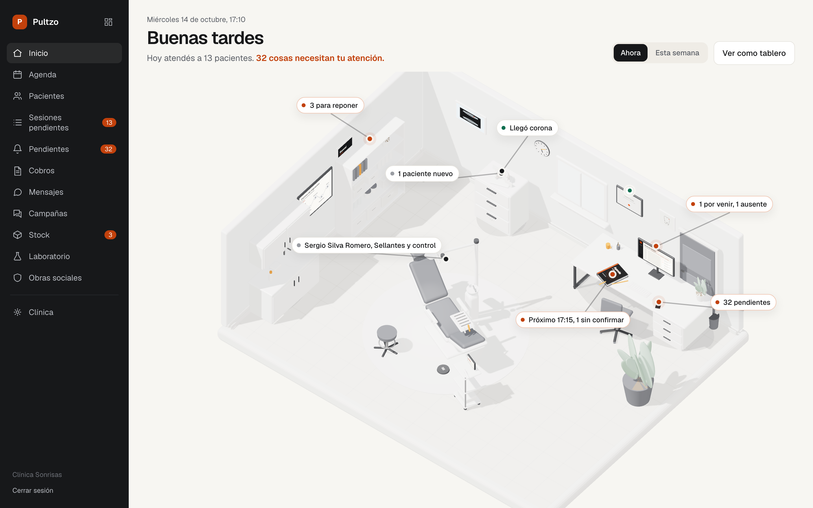
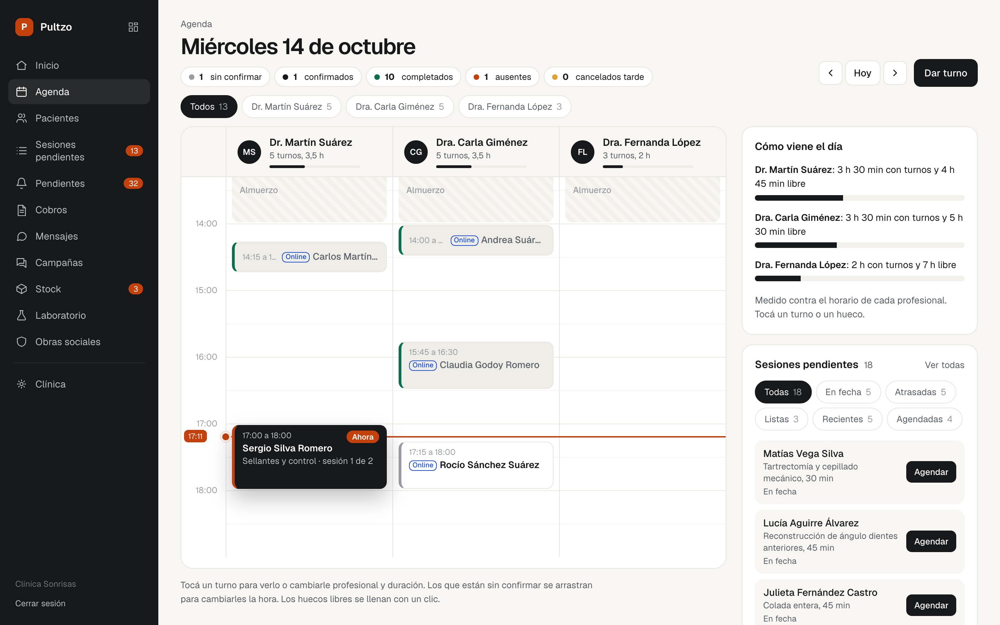
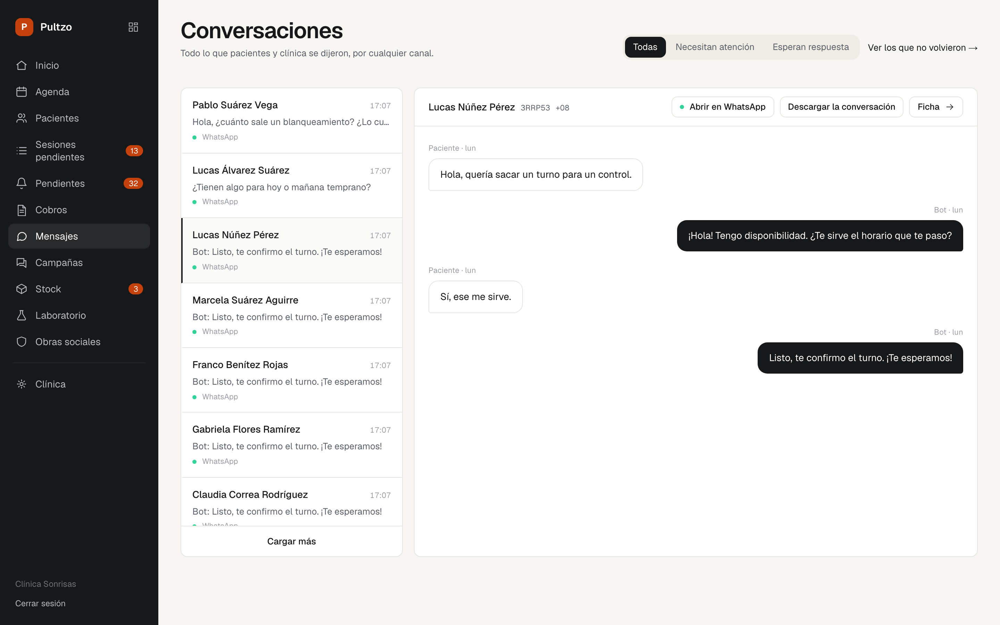
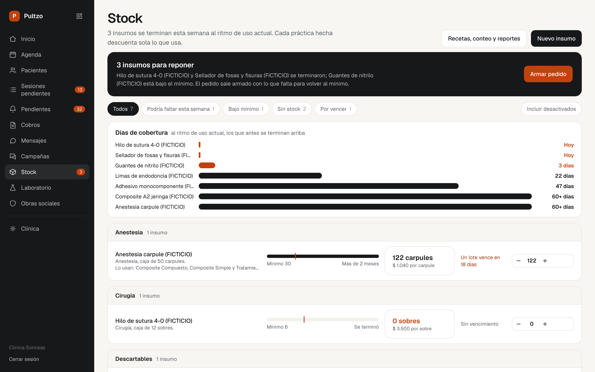
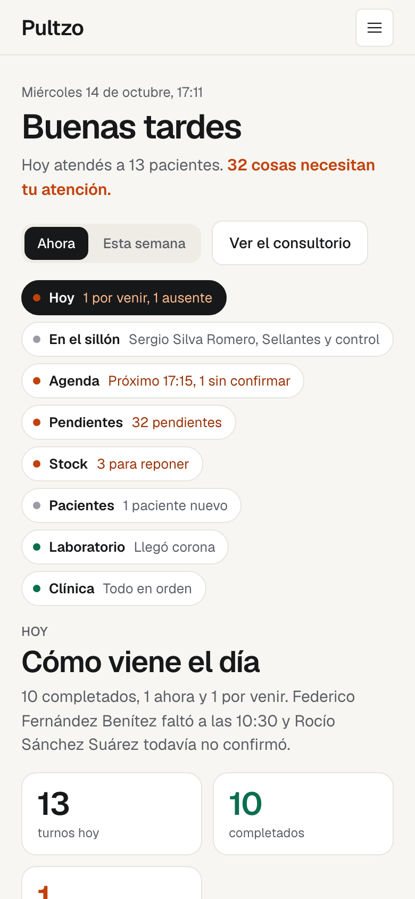

Toda gestión fue, alguna vez, una revolución. Esta es la tuya.
Oficina de registros, Baltimore, 1937
El papel
Durante casi un siglo, administrar un consultorio fue una habilidad manual.
Toronto Telegram · York University · dominio público
La planilla
La Macintosh puso una computadora con ventanas y mouse sobre un escritorio común. Con la planilla de cálculo, cada paciente pasó a ser una fila y cada cobro, una celda.
Nada más se perdía. Pero nada se entendía: la planilla sólo espera que alguien la cargue.
Bernard Gotfryd · Biblioteca del Congreso
El software
El sistema llegó a la clínica. Ordenó la información, pero no la entendió: seguía esperando que alguien cargara el turno, confirmara el pago y recordara al paciente.
Bill Branson · National Cancer Institute · dominio público
Toda revolución empezó con pocos.
Doce segundos en el aire y cinco testigos. Los primeros nunca fueron mayoría: fueron los que llegaron antes, aprendieron antes y se quedaron con la ventaja.
En los consultorios está pasando hoy. Mientras unos siguen atendiendo el teléfono, en otros el paciente ya sacó turno por WhatsApp. Sumarse primero es la diferencia.
John T. Daniels · Biblioteca del Congreso · dominio público
Así se ve desde adentro
- Inicio
- Agenda
- Ficha
- Sesiones
- Stock
De la recepción al depósito.
Bajá despacio: cada pantalla se abre por partes. La barra de arriba te dice cuánto falta.
Tu consultorio, en una sola mirada
- 01Trece pacientes hoy, con su horario y su sillón.
- 02Tres insumos para reponer antes de que falten.
- 03Una corona que volvió del laboratorio. Cada etiqueta abre la lista exacta.
El día, medido contra el horario real
- 01La línea roja marca la hora actual.
- 02Al costado, cuánto sillón libre le queda a cada profesional.
- 03Recordatorios automáticos veinticuatro y tres horas antes del turno.
El turno se reservó solo
- 01El paciente escribe a la hora que quiere.
- 02El asistente ofrece un hueco real de la agenda y lo confirma.
- 03Lo que no resuelve pasa a una persona, con la charla completa.
Una boca, tres cosas por hacer
- 01El odontograma en arcada marca lo que hay y lo que falta.
- 02Se dicta por voz, sin que la voz salga del consultorio.
- 03Lo escrito no se borra: se corrige con una entrada nueva.
Diez horas de sillón sin agendar
- 01Tratamientos en curso que todavía esperan turno.
- 02Ordenados por profesional y por quién espera más.
- 03Un clic y pasan a la agenda.
Cuántos días de cobertura quedan
- 01Cada práctica hecha descuenta sola los insumos.
- 02Lo que se termina esta semana aparece arriba.
- 03El pedido sale ya armado.
Eso es estar adentro. Un mostrador en silencio.




Así se ve desde adentro

Tu consultorio, en una sola mirada
- Trece pacientes hoy, con su horario y su sillón.
- Tres insumos para reponer antes de que falten.
- Una corona que volvió del laboratorio.
El día, medido contra el horario real
- La línea roja marca la hora actual.
- Cuánto sillón libre le queda a cada profesional.
- Recordatorios automáticos veinticuatro y tres horas antes.
El turno se reservó solo
- El paciente escribe a la hora que quiere.
- El asistente ofrece un hueco real y lo confirma.
- Lo que no resuelve pasa a una persona.
Una boca, tres cosas por hacer
- El odontograma marca lo que hay y lo que falta.
- Se dicta por voz, sin que la voz salga del consultorio.
- Lo escrito se corrige con una entrada nueva.
Diez horas de sillón sin agendar
- Tratamientos en curso que esperan turno.
- Ordenados por quién espera más.
- Un clic y pasan a la agenda.
Cuántos días de cobertura quedan
- Cada práctica hecha descuenta sola.
- Lo que se termina esta semana aparece arriba.
- El pedido sale ya armado.
Lo ponemos en marcha con vos.
No te damos un usuario y una contraseña para que te arregles. Configuramos tu clínica juntos y seguimos al lado cuando algo no cierra.
Si llegaste hasta acá, ya estás un paso adentro.
Veinte minutos sobre tu consultorio. Te lo mostramos funcionando.
Ver todo lo que hace Pultzo, módulo por módulo
Fotografías: oficina de registros de la Social Security Board, Baltimore, 1937, Harris & Ewing, Biblioteca del Congreso, dominio público · mostrador de trámites, Toronto, 1946, Toronto Telegram, York University Libraries, dominio público · Steve Jobs y la Macintosh, enero de 1984, Bernard Gotfryd, Biblioteca del Congreso, sin restricciones de copyright conocidas · puesto de enfermería, 1987, Bill Branson, National Cancer Institute, dominio público · primer vuelo de los hermanos Wright, Kitty Hawk, 17 de diciembre de 1903, John T. Daniels, Biblioteca del Congreso, dominio público. Las pantallas de Pultzo muestran datos ficticios.